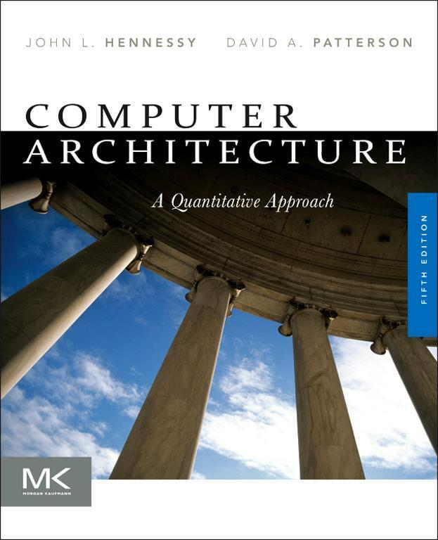
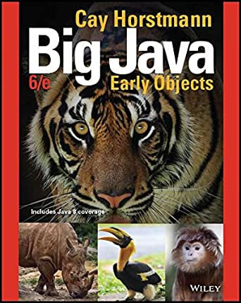
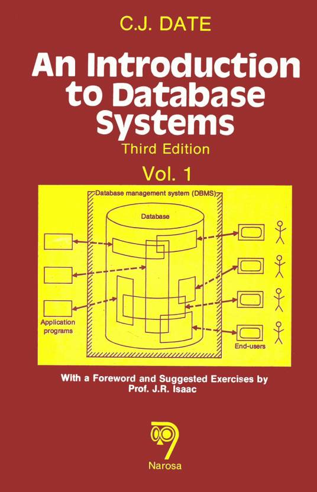
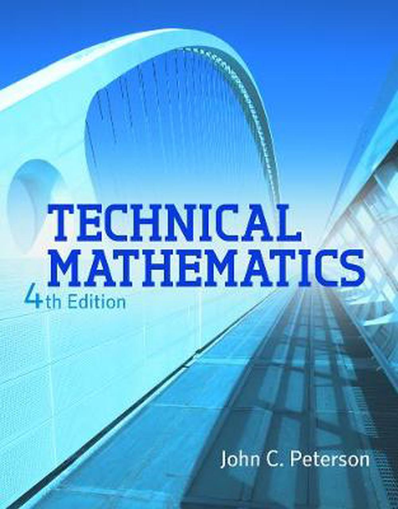
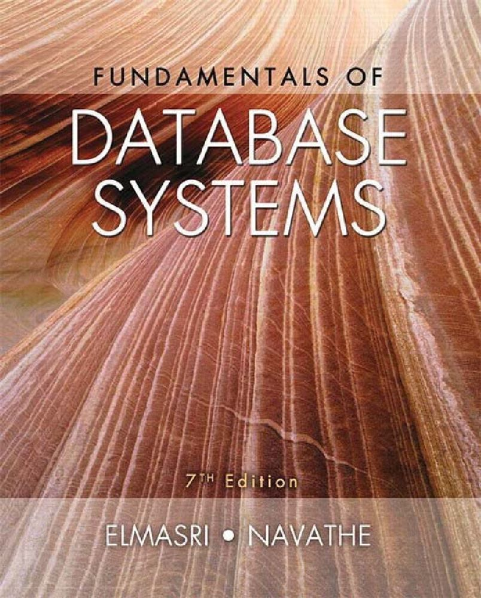
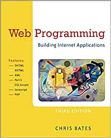
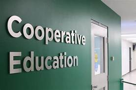

| Course Code | Level | Title & Description |
|---|---|---|
|  | 1 | CST8101: Computer EssentialsThe essentials of computer software, hardware, and laptop management form the foundation for building further technical programming skills. Learn to configure your laptop environment, basic PC and troubleshoot problems. Create backups, install virus protection, and manage files through a basic understanding of the Windows Operating System. Install and configure the Windows Operating System, and a virtual machine environment. |
|  | 1 | CST8116: Introduction to Computer ProgrammingStudents develop introductory knowledge of computer programming with emphasis on problem analysis and design, using algorithms, pseudocode, flowcharts, UML Class Diagrams and testing, with the Java programming language used as a means to implement problem solution designs. Through an introduction to the Java programming language students use sequential structures, selection structures, repetition structures, variables, constants, methods, constructors, one-dimensional arrays, object-oriented programming, classes, objects, abstraction, encapsulation, inputs, outputs, coding conventions and documentation. |
|  | 1 | CST8215: Introduction to DatabaseStudents learn the fundamentals of Relational Databases design using Entity Relation diagrams, and use SQL to create, modify and query a database. Students design and create databases that are maintainable, secure and adaptable to change in business requirements, using Normalization. Students are able to compare and appreciate a Database Management System (DBMS) and its components with legacy systems. |
 |
1 | CST8300: Achieving Success in Changing EnvironmentsStudents explore the possibilities ahead, assess their own aptitudes and strengths, and apply critical thinking and decision-making tools to help resolve some of the important issues in our complex society with its competing interests. |
| 1 | ENL1813T: Communications IUsing a practical, vocation-oriented approach, students focus on meeting the requirements of effective communication. Through a combination of lectures, exercises, and independent learning, students practise writing, speaking, reading, listening, locating and documenting information and using technology to communicate professionally. Students develop and strengthen communication skills that contribute to success in both educational and workplace environments. |
|
|  | 1 | MAT8001C: Technical Mathematics for Computer ScienceStudents manipulate algebraic expressions, solve algebraic equations and linear systems and learn the properties of and graph algebraic and transcendental functions. Students investigate computer number systems in addition to Boolean algebra and logic to help solve problems involving computer systems. Students also study the addition and subtraction of vectors using vector components. |
|  | 2 | CST2355: Database SystemsStudents acquire practical experience using market-leading object-relational database management systems like Oracle and MySQL. Students obtain hands-on experience with advanced engineering modeling tools along with SQL, SQL scripts and programming with Oracle's PL/SQL blocks. Database concepts covered include advanced SQL, case structures, rollup and cube operations, metadata manipulation, data storage and retrieval, security and transaction control and data warehousing. |
 |
2 | CST8102: Operating System Fundamentals (Gnu/Linux)Learn the basic concepts and components of Operating Systems (OS), and how they function and interact with hardware and software components. Explore the details of operating system structures, process management, storage management, installation, configuration, and administration both in theory and through practical assignments based on the GNU/Linux operating system. |
|  | 2 | CST8284: Web Programmingthe basics of web programming, website design and implementation. JavaScript, HTML5, and PHP are used to explore web-based solutions to problems of increasing interactivity and complexity. Lectures are reinforced by practical assignments that encourage students to construct and maintain their own websites. |
| 2 | ENL2019T: Technical Communication for Engineering TechnologiesThe ability to communicate effectively in a technically-oriented interdisciplinary workplace is a foundational skill in an innovation-driven economy. Students are exposed to exercises and assignments designed to foster independent and collaborative critical thinking, research, writing, visual communication and presentation skills related to technical topics. |
|
|  | 2 | GEP1001: Cooperative Education ReadinessStudents are guided through a series of activities which prepares them for their co-op job search term. Through a detailed orientation students learn the cooperative education program policies and procedures related to searching and securing a work term opportunity. Students identify their strengths and transferable skills and participate in workshop style sessions that focus on cover letter and resume development, interview techniques and job search strategies |